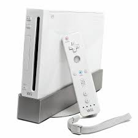
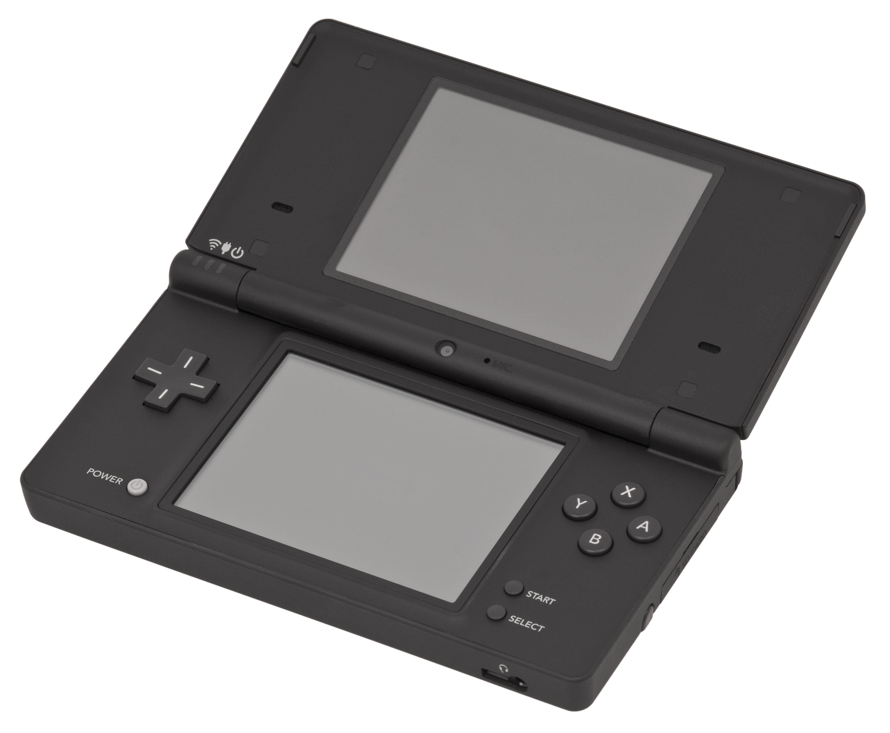
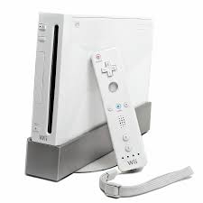
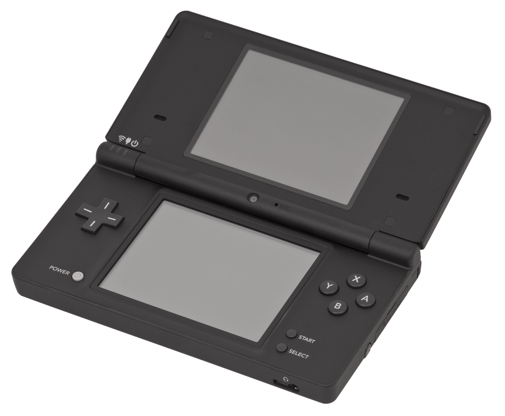

PlayStation se introdujo por primera vez el 28 de Febrero de 1990 en Japón con la PlayStation 1, despues vino la PlayStation 2 el 4 de Marzo del 2000, la PlayStation 3 se lanzo el 11 Noviembre de 2006, la PlayStation 4 se estrenó el 15 de Noviembre de 2013 y la ultima consola que lanzó fue la PlayStation 5 el 19 de Noviembre de 2020.


La X-box se creo el 14 de Noviembre de 2001, en Washington, Estados Unidos, luego fue la X-box 360 el 22 de Noviembre de 2005, despues vino la X-box One el 21 de Mayo de 2013, luego fue la X-box Series S el 10 de Noviembre de 2020 y por ultimo la X-box Series X el 10 de Noviembre de 2020, al igual que la X-box Series S.

Nintendo fue creada el 23 de Septiembre de 1889 en Kioto, Japón con la Nintendo Entertainment System, luego fue la Nintendo Game Boy el 21 de Abril de 1989, Luego la Virtual Boy en 1995, luego fue la Nintendo 64 el 23 de Junio de 1996, despues la Game Cube el 14 de Septiembre de 2001, luego fue la Wii el 19 de Noviembre de 2006, le siguio la Nintendo DS el 1 de Noviembre de 2008, em 2010 sacaron la Nintendo DSi, en 2011 la Nintendo 3DS(voy a dar un salto porque de 2011 a 2017 son simples actualizaciones de antiguos diseños), en 2017 sacaron la Nintendo Switch, en 2019 la Nintendo Switch Lite y por ultimo la Nintendo Switch OLED en 2021.


 


